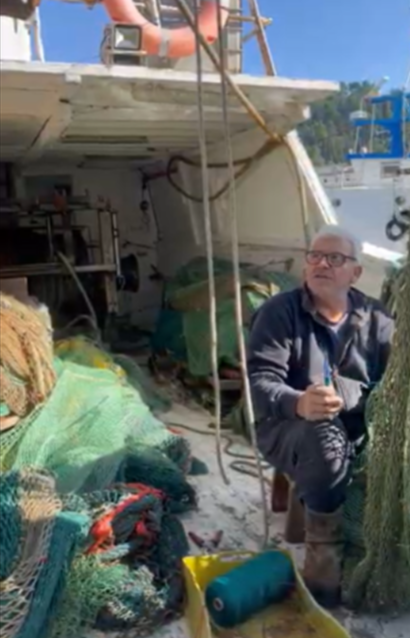
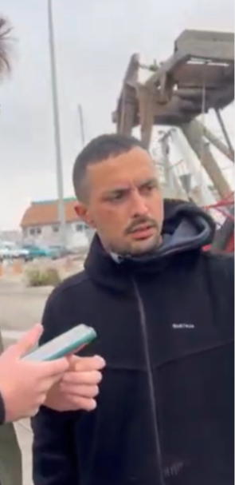
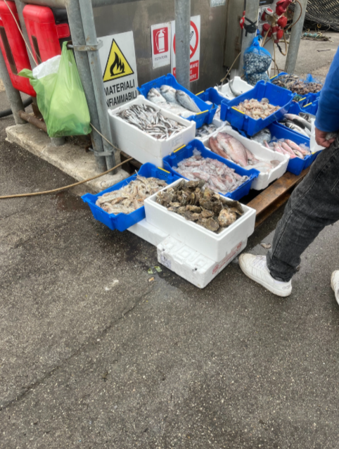
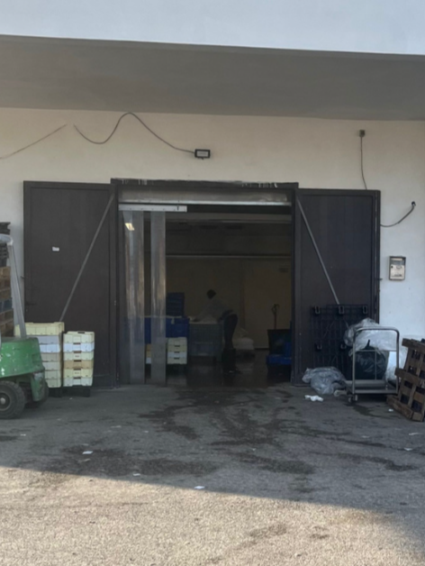
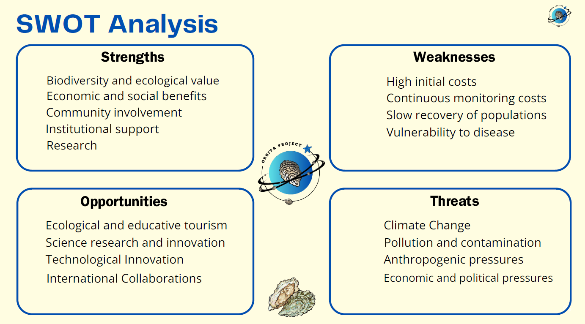

Oyster Reef Restoration Proposal developed during the Marine Ecosystem Restoration course
This project presents an original restoration proposal for native European oyster reefs in the Adriatic Sea, integrating ecological restoration, marine conservation, long-term monitoring, stakeholder engagement and ecosystem service assessment into a realistic restoration framework.
O.R.B.I.T.A. — Oyster Reef Restoration Back Into The Adriatic Sea — is an original restoration proposal developed during my Master's Degree in Marine Biology. The project aims to restore a portion of the once abundant Ostrea edulis beds in the Adriatic Sea, bringing back these important ecosystems with all the benefits they provide.
Although the restoration has not yet been implemented, the project was conceived as a realistic proposal that could potentially be submitted to real funding programmes such as LIFE, Horizon Europe or regional restoration initiatives. The restoration framework was entirely designed by our team, integrating scientific literature, international restoration guidelines, and local knowledge.
Develop a scientifically grounded, realistic restoration strategy for native oyster reefs in the Adriatic Sea.
Restore habitat complexity to support associated fauna and increase local biodiversity.
Re-establish key ecological functions including water filtration, carbon sequestration and nutrient cycling.
Create three-dimensional structures that provide shelter, feeding and nursery grounds.
Enhance local fisheries through spillover effects and increased fish production.
Contribute to coastal ecosystem resilience against climate change and anthropogenic pressures.
Integrate local communities, fishermen, restaurants and diving centres into the restoration process.
Create a restoration framework that can be scaled up to larger areas in the future.
Ostrea edulis, the European flat oyster, is an ecosystem engineer that creates complex three-dimensional structures known as oyster beds or reefs. These habitats provide numerous ecosystem services, including water filtration, habitat creation, carbon sequestration and shoreline protection.
Unfortunately, natural oyster beds in the North Adriatic are strongly declining due to overharvesting, bottom trawling, habitat loss and disease. Today, only a few small residual beds remain, making restoration urgently needed.
Oysters filter plankton and suspended particles, improving water clarity
Complex 3D structures provide shelter for invertebrates and fish
Oyster reefs act as carbon sinks, storing carbon in shells and sediments
Reefs reduce wave energy and coastal erosion
Provide foraging and nursery areas for commercially important fish species
Support diverse assemblages of invertebrates, fish and algae
The proposed restoration strategy follows a systematic approach, from site selection to long-term monitoring. Each phase was carefully designed to maximize restoration success.
The proposed restoration site is located in front of the Fano coast, approximately 3.5 nautical miles from the coast, at 10 metres depth, near existing oyster occurrences. The site selection was based on a careful analysis of multiple data sources:
Historical data from Thurstan et al. (2024) and Marsili (1715) revealed that oyster reefs were once widespread in the Adriatic, with the only documented reef of known extent located between Fano and Pesaro.
Occurrence data from OBIS and GBIF databases were exported and analysed on GIS maps, revealing a patchy distribution pattern in the Adriatic, with residual populations scattered along the coast.
Local Ecological Knowledge (L.E.K.) was collected through interviews with fishermen at Ancona's port, providing valuable insights into past and present oyster distribution in the Marche region.




Cross-referencing all the obtained data, we concluded that the Fano area could be an optimal restoration site. The selected area is positioned downstream from residual natural oyster aggregations to take advantage of natural larval dispersal.
Historical data analysis, GIS mapping, fishermen interviews, and environmental baseline assessment.
Collection of baseline data on natural oyster populations, habitat condition and environmental parameters.
Collection of 200m³ of oyster shells from local restaurants and fishermen, followed by washing and UV sterilization.
Procurement of 10,000 adult oysters from certified hatcheries with health and biosecurity certification.
Construction of 40 reef-blocks (10m³ each) composed of metal cages filled with calcareous stones and recycled oyster shells.
Deployment of reef-blocks using a vessel equipped with a crane over 4-5 days.
Attachment of 10 mesh-bags containing 25 adult oysters each (25 ind/m²) to the upper face of each block.
10+ years of monitoring following BACI design, with quarterly surveys and adaptive management as needed.
The monitoring programme was specifically designed for this restoration proposal following a BACI (Before-After-Control-Impact) design. It includes three main components:
Monitoring of habitat progression, oyster density, cover percentage and sex ratio on natural residual beds.
Assessment of growth rate, survival rate, sex ratio and recruitment rate on the artificial reef blocks.
Continuous monitoring of water quality, temperature, salinity and biodiversity indicators.
Monitoring metrics include photoquadrats (1m × 1m), CTD profiling, Niskin bottle sampling, BRUV surveys, ImageJ analyses for percentage cover estimation, and ecological indicator assessment.
Quarterly surveys are planned over a 10+ year period, with 4 sampling events per year. The natural reef will be monitored for 11.5 years to establish a robust baseline, while the restoration site will be monitored for 10 years following reef-block deployment.
Stakeholder involvement was intentionally incorporated into the project design to maximize long-term ecological and social success. Involving as many people as possible in the project is crucial to its success, informing people about the restoration work is essential for developing networks, awareness and impact.
Shell supply, future spillover benefits
Shell recycling, Oyster Friendly stamp
Volunteers, donations, public awareness
Research, monitoring, student involvement
Scientific support, expertise, co-design
Permitting, regulations, institutional support
Citizen science, volunteering, expertise
Recreational diving, citizen science, revenue sharing
Visual census, monitoring support, engagement
All info, news, events and ways to get involved
Periodical updates and high visibility
3-session cycle with scientists from different universities
Visual census and monitoring involvement
Workshops and restoration activities
Partner network and awareness
Public drop points and restaurant collection
Oyster Friend certificates and merchandise
The estimated total budget for the proposed restoration project is approximately €450,000. Costs are unevenly distributed over time, with higher initial costs for reef-block construction and deployment, while monitoring costs are more significant but diluted over the 10+ year period.
€185,000
Broodstock: €70,000
Calcareous rocks: €15,000
Gravel: €9,000
Cages: €25,000
Boat + crane + crew: €33,000
Blocks construction: €10,000
Biosecurity: €6,000
Oyster shells: In kind + incentives
€239,000
Equipment: €4,000
Research divers: €170,000
Boat rental: €50,000
Lab analysis + personnel: €15,000
€26,000
Seminars: €6,000
Social promotion: €10,000
Workshops: €10,000
Estimated Total Budget: ≈ €450,000
The following funding sources were identified as potential mechanisms for a future implementation of the restoration proposal:
EU funding for environment and climate
EU research and innovation framework
European territorial cooperation
National Biodiversity Future Centre
Corporate sponsorship and foundations
Public crowdfunding and merchandise sales
If implemented successfully, the restoration is expected to provide the following ecosystem services:

This restoration proposal was conceived as a pilot restoration project covering approximately two hectares. The aim of this pilot-scale approach is to demonstrate the effectiveness of our restoration plan on a manageable scale, in order to obtain the funding necessary for a larger-scale project.
Successful implementation of this pilot could support future expansion at larger spatial scales and contribute to native oyster restoration initiatives throughout the Adriatic Sea, helping to bring back these important ecosystems with all the benefits they provide.
The restoration proposal was supported by current scientific literature and international restoration guidelines. All methodologies and design choices were informed by published research, while the restoration framework itself was independently developed by our team.
This project challenged me to transform ecological theory into a realistic restoration proposal, integrating marine ecology, ecosystem restoration, conservation planning, stakeholder engagement and long-term monitoring into a coherent framework inspired by current international restoration practices. Designing this project strengthened both my scientific reasoning and my ability to develop practical, evidence-based solutions for marine ecosystem recovery.
Download the complete Oyster Restoration Project proposal including detailed methodology, cost analysis, monitoring programme and stakeholder engagement strategy.
PDF document · Restoration Proposal · 3.8 MB